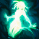

Senna, A Redentora
Rota
-
Passiva
ABSOLVIÇÃO
Quando unidades são abatidas perto de Senna, suas almas são periodicamente aprisionadas na Névoa Negra. Senna pode atacar essas almas para libertá-las, absorvendo a Névoa que as aprisiona na morte. A Névoa é o combustível do poder de seu Canhão Relicário, alimentando-o com Dano de Ataque, Alcance de Ataque e Chance de Acerto Crítico. Ataques do Canhão Relicário de Senna demoram mais para disparar, causam dano adicional e concedem a ela brevemente uma parte da Velocidade de Movimento do alvo.
-
Habilidade Q
ESCURIDÃO PERFURANTE
Dos canos gêmeos de seu Canhão Relicário, Senna dispara um raio unificado de luz e sombra através do alvo, curando aliados e causando dano a inimigos.
Habilidade W
ABRAÇO FINAL
Senna dispara uma onda de Névoa Negra. Se atingir um inimigo, ela o aprisiona ferozmente, enraizando o alvo e tudo que estiver ao redor dele após um curto intervalo.
-

Habilidade E
-
Habilidade R
Habilidades
MALDIÇÃO DA NÉVOA NEGRA
Senna reúne a Névoa que ela armazenou em sua arma e a transforma em uma tempestade ao seu redor, abraçando a escuridão e se tornando um espectro. Os aliados que entram na área são camuflados e também tomam a forma de espectros enquanto a Névoa os envolve. Espectros têm sua Velocidade de Movimento aumentada, são inalvejáveis e escondem a própria identidade.
SOMBRA DA ALVORADA
Senna invoca as pedras relicárias dos Sentinelas caídos, dividindo seu canhão relicário em uma miríade de luz e sombra. Ela, então, dispara um raio global que concede escudo a aliados, enquanto causa dano aos inimigos atingidos no centro.
Curiosidade
Amaldiçoada desde a infância a ser perseguida pelo fenômeno sobrenatural da Névoa Negra, Senna se juntou à ordem dos Sentinelas da Luz e lutou bravamente contra seu destino. Ela acabou sendo morta e teve sua alma aprisionada em uma lanterna pelo cruel espectro Thresh. No entanto, por se recusar a perder as esperanças, ela aproveitou seu tempo dentro da lanterna para aprender a usar a Névoa, ressurgindo com uma nova vida e sabendo que jamais voltaria a ser a mesma. Agora, armada com as forças da luz e da escuridão, Senna busca exterminar a Névoa Negra, atraindo o fenômeno para si mesma a cada disparo de sua arma relicária e salvando as almas perdidas que ali residem.